1967 Brown Box
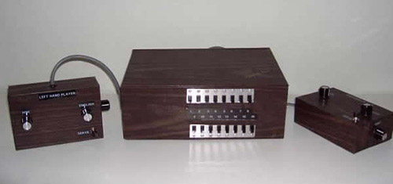First Video game console. Two built in controllers. Invented by Ralph Baer in 1967. He is known as the father of Video Games.
1972 Magnavox Odyssey
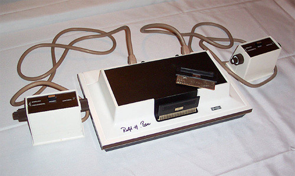
First official home video gaming console.
Programmed sound only.
1975 Atari Pong System
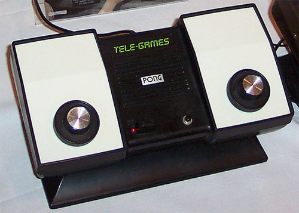Built after Atari saw the huge success of their game Pong. Is the console version of pong built to allow fans to play the game at home.
1975 Magnavox Odyssey 100
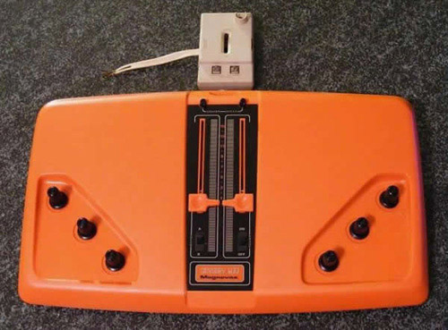A much simpler version of the Magnavox Odyssey. It only played 2 games. Mechanical Scoring. Vertical/Horizontal Player Action. Game Select Switch. On/Off Power Switch.
1975 Magnavox Odyssey 200
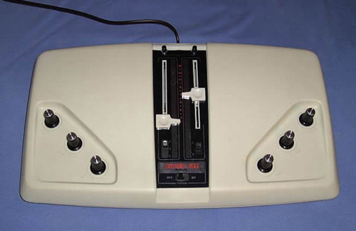Just like the Odyssey 200 with the addition of 1 new game SMASH. First multiplayer console.
1976 Telstar
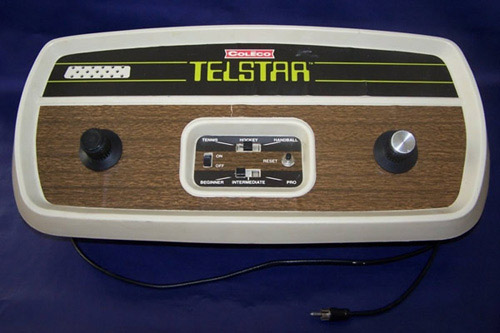6 games with difficulty levels. Played in color. 15 more games were later developed in 2 years. all 21 games were all quite similar to eachother just had different colors and symbols.
1976 Channel F
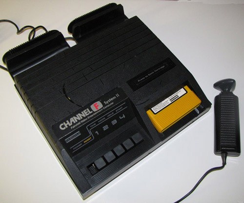Fist to use ROM-based cartridges, served as the mainstay for consoles unto the N64. First console you have a Pause function.
1976 Magnavox Odyssey 300
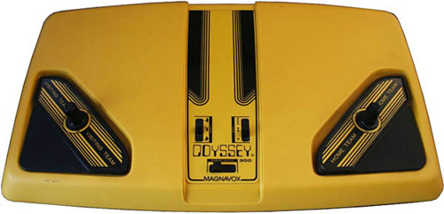First system to contain all of the PONG circuitry on one chip. Magnavox’s answer to the Telstar.
1976 Magnavox Odyssey 400
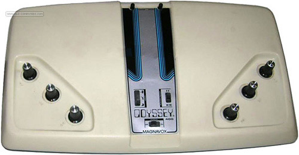Added on screen scoring.
1976 Magnavox Odyssey 500
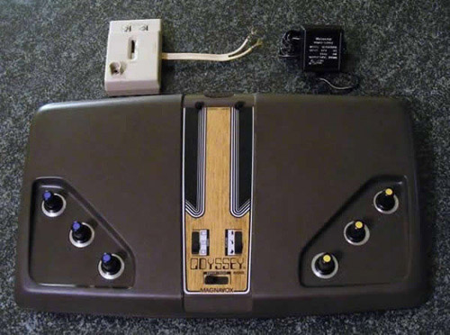New advanced clean layout. Sprites now on screen instead of paddles.
Wonder Wizard Model 7702
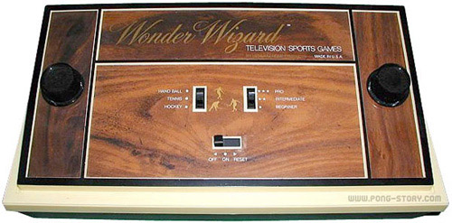Just a cleaner version of the Magnavox Odyssey
Atari 2600
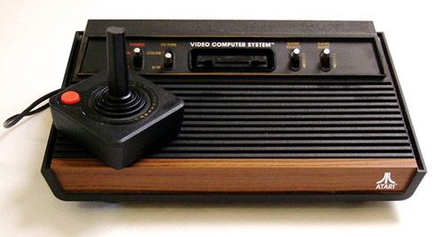Considered to be the beggining of games for it's time. Kickstarted Atari's multi-million dollar game industry selling over 30 million consoles.
Telstar Colormatic
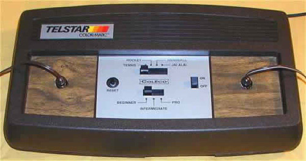First system to have colors on the screen
Sega SG-1000
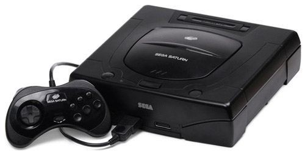First SEGA console. Used cartriges, which was new. Did not sell as well as first planned.
Nintendo Entertainment System
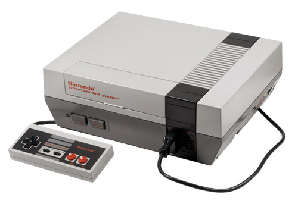Easily the most successfull game console of its time. All of the game hits that you know and love today. Sold over 62 million consoles.
Super Nintendo Entertainment System
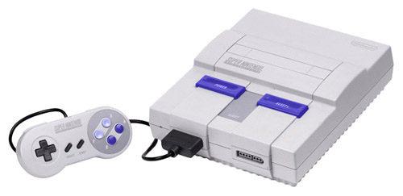Complete failure in the eyes of Nintendo. Caused by not upgrading to 16 bit graphics.
Playstation
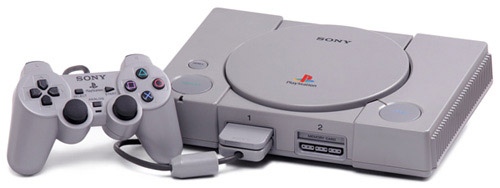First console to use discs. Sony's leap into moneyland. Major leaps into 3D graphics.
Nintendo 64
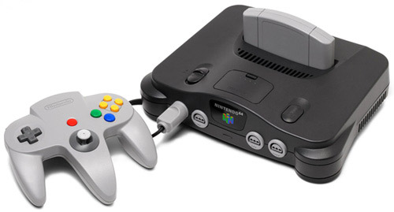Some say it was the worst Nintendo had done yet. It is personally my favorite console.
Playstation 2
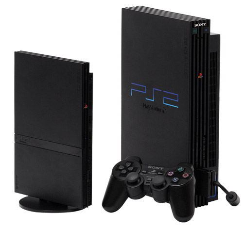Best selling console up to this point. Probably the worst of the three at that point.
Nintendo Gamecube
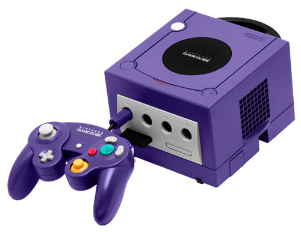Nintendo's answer to the PS2 and Xbox. Tried to be more like it's competitors.
Xbox
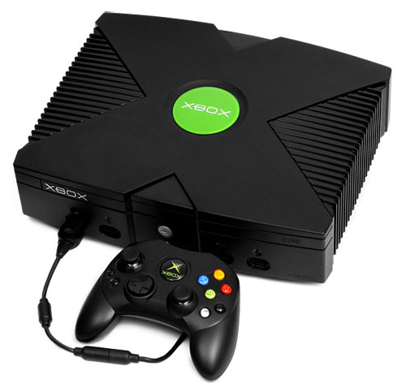Microsoft's step into the videogame wars. Became popular with Halo and Xbox Live. 3x more powerful than the PS2
PS3
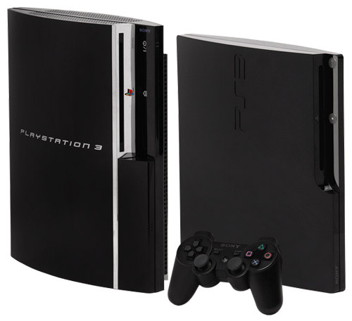Blow your mind graphics for it's time. Blue-Ray drive. Big hard drive.
Wii

Said to be the family console. First console to use player motion to control the game. More affordable.
Xbox 360

While it is popular for it's online gameplay, it is also called trash because of all of it's problems.
PS4
The best graphics of it's time. Hand and face tracking. Playstation Eye, to combat the Kinect.
Xbox One
Streams TV through it. Better connect that is always watching and listening.